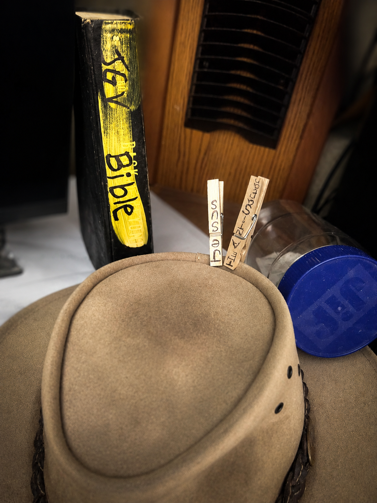

OPEN CANON:
JESUS, MY FIELD JOURNAL

Zion Coalition Is A New Book In The Bible
Jesus is authorized to write new scriptures. He does so using my body (per Alma 34:34, like He used Matthew's body and Joseph Smith's body and other bodies).
Zion Coalition is in rough-draft form... Jesus and I are still working on it. But you can get an early view, now. So can I.
An Open Bible
One of my favorite spiritual gifts that Jesus gave me is an open canon.
An open Bible.
Like an open relationship in Babylon, I suppose—but holy.
An unsealed Bible.
Some might say:
And my response is:
Jesus has given me a personal Bible that He adds to frequently. In fact, this very post is going straight into what Jesus calls the Jesus-Greg Version (JGV) of the Bible.
Different than the King James Version (KJV). Different than the Joseph Smith Translation (JST).
Want one? Your own personal version?
Ask Jesus.
He may create your own Jesus-You Version.
At least that has been my experience.
Not For The World First
Over the years I have come to believe that much of what Jesus gives me is not primarily intended to become a guidebook for the world.
For many years, I assumed that whenever Jesus inspired me to create something—a book, a song, a painting, a website, a film, a performance piece, a social media post, a room, an altar, an object lesson, or some other creative project—its primary purpose was to communicate something to other people.
Then I believe Jesus gently corrected me.
That thought changed nearly everything.
The Bible Jesus Gives Me Is A Field Journal
A guidebook is written for strangers.
A field journal is written for a traveler.
A guidebook must explain itself.
A field journal often does not.
A guidebook is designed for public understanding.
A field journal is designed for personal navigation.
I began to realize that many of the things Jesus has inspired me to create may not primarily exist to teach other people.
They may exist to teach me.
Notes To Myself Become Verses In The Bible, JGV
A painting may be a note to myself (and literallya verse of scripture in the Bible).
A song may be a reminder (and a verse of scripture in the Bible).
A film may be a marker left on the trail (verse in the Bible).
A performance art piece may be a lesson that I need to experience more than explain (verse in the Bible).
A room may become a teaching tool (verse in the Bible).
A symbol may become a memory device (verse in the Bible).
An altar may become a bookmark (verse in the Bible).
A website may become a map (book in the Bible).
What appears to outsiders as unusual, repetitive, disconnected, or difficult to understand (like some verses in the King James Version of the Bible, right?) may contain an entire world of meaning for the person who received it.
A Climber's Journal
A climber's journal might contain simple phrases:
"Don't trust the ridge after noon."
"The red rope is the right rope."
"Keep moving."
"Remember why you came."
"Listen to that one redeeemed classic rock song by Jesus, Axl and Greg."
To outsiders, those phrases may seem incomplete. Silly?
To the climber, they contain entire chapters. Life saving instruction.
Breadcrumbs From Jesus
I believe many of the communications Jesus gives me operate this way.
They are breadcrumbs.
Markers.
Memorial stones.
Trail signs.
Little waking dreams.
Objects, images, songs, stories, and experiences that contain far more meaning than is immediately visible.
Other people may benefit from them.
In fact, I hope they do (Oh that I were an angel!).
Another climber may stumble upon a field journal and find something useful.
But that is not always the primary purpose.
The Student
The primary purpose may be that Jesus is teaching me.
Preparing me.
Reminding me.
Correcting me.
Encouraging me.
Leading me.
Helping me remember things that I would otherwise forget.
Sometimes Jesus appears less interested in creating a perfect explanation for the public than in creating a memorable lesson for the student. (In my case, that is an understatement)
And sometimes I am the student.
"Will everyone understand this?"
The question is usually:
"Will this help Greg continue the climb?"
The Purpose Of My (JGV) Open Canon
That realization has changed the way I see my open canon.
The JGV is not primarily a new volume of scripture for the world.
It is a field journal.
And it is also a living parable about PERSONAL REVELATION FROM GOD (#HearHim... and write it down, if Jesus tells you to, like He does me).
A collection of lessons, reminders, symbols, stories, experiences, songs, projects, and breadcrumbs that Jesus has used to guide me through my own wilderness.
My own climb.
My own discipleship.
Continue The Climb
Years from now, I may encounter a familiar mountain, a familiar trial, a familiar question, or a familiar invitation.
And I may discover that Jesus had me write a note, build a room, create a symbol, compose a song, paint a picture, make a film, or share a strange Facebook post long before I understood why.
Then I will remember (probably because I have been reading my scriptures---JGV---faithfully feasting upon the words of Christ (that were given to me: Greg)
And remembering, I will know where to place my next step.
And remembering, I will continue the climb.
Not merely to reveal new truth.
But to help a traveler remember the truths Jesus has already revealed along the way.